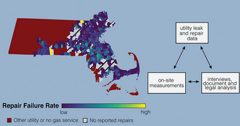

Sed magna
ipsum faucibus

An analysis done by the American Chemical Society found that Massachusetts alone had a near 20% pipe repair failure rate from 2014-2017, consituting nearly 10,000 failed pipe repairs, each leaking nearly 2000 ft^2 of natural gas.